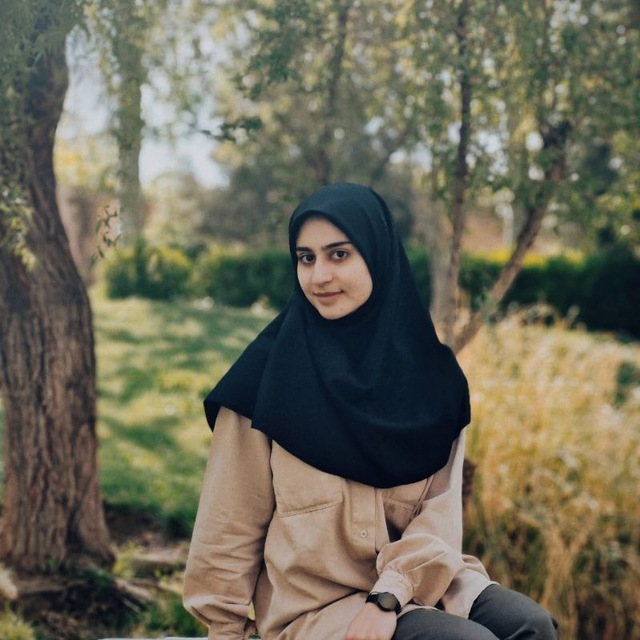

About me
I am Fatemeh Mokhtari, currently a final-year Computer Engineering student at the University of Isfahan. When it comes to my interests, I can say that my primary passion is to become a Java Backend Developer, and I am currently learning the Spring Framework. I have also recently gained some familiarity with HTML and CSS, and I’m exploring ideas to get started as a Front-End Web Developer. Additionally, I’m interested in UI/UX design, and I have worked on several projects using Figma in the past. My current main goal is to become a Backend Developer and get hired by a great company. You can find the links to my completed projects on the Resume page.
Interests
- Frontend Design
- Backend Development
- Java learning
- UX/UI Designer
Education
B.Sc. in Computer Engineering
University of Esfahan, 2025 - Present